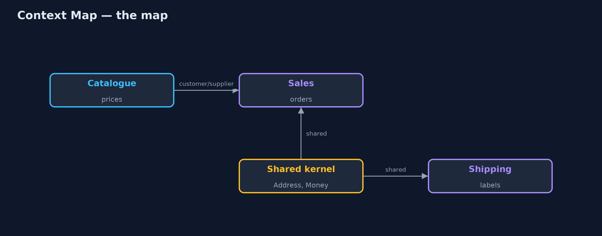
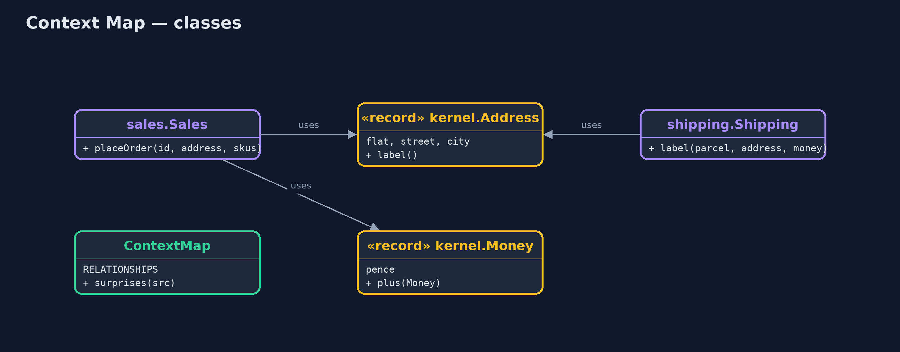
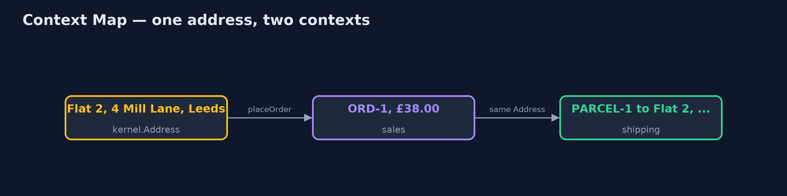
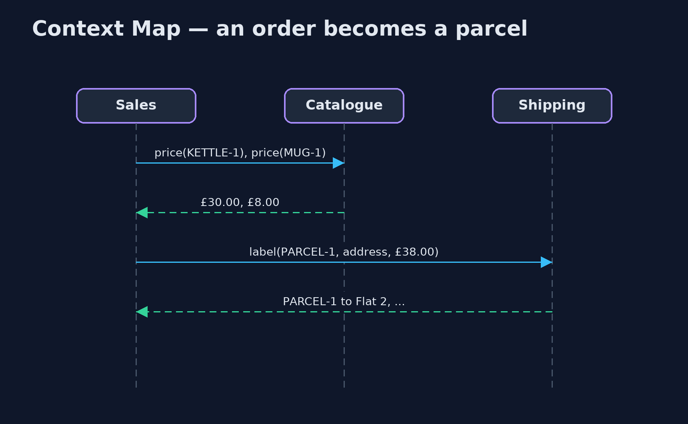

Context Map and Shared Kernel Pattern
src/main/java/com/jk/explore/contextmap/
├── ContextMap.java The pattern's map: which contexts exist, how each pair is related, and a check that the code's imports agree
├── ContextMapDemo.java The five acts: two copies of an address, a shared kernel, the context map, the map checked against the code, and the bill
├── before/Separate.java Without a shared kernel: sales and shipping each keep their own address, and a converter copies one into the other
├── catalog/Catalog.java The catalogue context: the upstream supplier of prices
├── kernel/Address.java Shared kernel: the one address both sales and shipping use
├── kernel/Money.java Shared kernel: whole pence, so sales and shipping add up the same way
├── sales/Sales.java The sales context: takes orders
└── shipping/Shipping.java The shipping context: prints labelsWrite down how the parts of a system relate, check the code against that map, and where two parts must agree exactly, share a tiny kernel that both own.
In domain-driven design, a large system is split into bounded contexts: parts such as sales, shipping and the catalogue, each with its own model and team. A context map is the drawing of how those parts relate: who supplies whom, who must conform to whom, who translates. Shared Kernel is one of those relationships: a small piece of model, such as an address and an amount of money, that two contexts share and change only by agreement.
The map is most useful when it is not just a drawing. Kept as code, it can be checked against the program's actual imports on every build.
The idea in everyday terms
Think of two neighbouring houses that share a garden wall and a gate. Each family runs its own house as it likes, but the wall and the gate belong to both, and neither can knock them down or move them without asking the other. A street map shows which houses share what with whom, so nobody is surprised.
The scenario
The online store has a sales context that takes orders, a shipping context that prints labels, and a catalogue that supplies prices. Sales and shipping each kept their own Address class, and a converter copied one into the other. When sales added a flat number, the converter dropped it, and parcels waited at the main door of blocks of flats.
Run
./gradlew runThe demo tells the story in 5 acts, each printing exact numbers that the tests check:
| Act | What it shows |
|---|---|
| 1. Two copies of an address | Sales' address has a flat number; the converter to shipping's address drops it: the label says 4 Mill Lane, Leeds. |
| 2. A shared kernel | Sales and shipping share kernel.Address and kernel.Money: the order is £38.00 and the label keeps Flat 2. |
| 3. The context map | Three relationships: catalogue supplies sales; the kernel is shared by sales and by shipping; shipping does not know sales. |
| 4. The map, checked | Scanning imports finds 0 the map does not allow; shipping importing sales is reported. |
| 5. The bill | Adding a postcode to Address needs both teams; keep the kernel to 2 classes. |
Test
./gradlew test9 tests in ContextMapTest, DemoRunsTest. Every number the demo prints is asserted, and nothing depends on the clock, so every run gives the same result.
Technologies and versions
| Technology | Version | Used for |
|---|---|---|
| Java | 21 | the code (toolchain set in build.gradle) |
| Gradle | 9.2.1 (wrapper) | build and run, nothing to install |
| JUnit | 5.10.2 | the tests |
| videokit | repository tool | the narrated video and animation: Piper en_US-amy-medium, speed 0.8, longer pauses (the approved amy-slow voice) |
Learning Material
| Document | What it is for |
|---|---|
| Problem statement | the situation and what the project must show |
| Prerequisites | what you need to know first |
| Context Map and Shared Kernel, explained | the acts in prose |
| Session guide | a one-hour lesson with exercises |
| Animated walkthrough | the acts step by step, narrated |
| Spec | what this project must be true of |
The pattern in one picture
The catalogue supplies sales; sales and shipping share a tiny kernel.

Where each piece sits
Two kernel records used by both contexts.

How the data moves
Nothing is converted, so nothing is lost.

Who calls whom, in order
Sales asks the catalogue; shipping reads the kernel.

Video
video/context-map-pattern-explained.mp4 (with .m4a audio and .srt subtitles) is built by video/build_video.sh. Rendered media is not committed.
What it costs
- A kernel changes slowly. Every change to it needs both teams to agree, test and release together.
- Kernels grow. It is tempting to add "just one more" shared class; keep it to a handful.
- A map to maintain. The map is only useful while it matches the code, which is why it is checked.
When this is too much
A small program built by one team has one context and needs no map. And when two contexts only need to exchange data, not share a model, a published language (an agreed message format) or an anti-corruption layer keeps them more independent than a shared kernel.
Where you have already met this
- A shared
commonorcorelibrary used by two services. - Context map diagrams in architecture documents, with arrows marked upstream and downstream.
- ArchUnit or module rules that say which packages may depend on which.
Where this sits
This project is in domain-driven-design-patterns, next to Bounded Context, which defines the parts, and Anti-Corruption Layer, another relationship a context map can show.